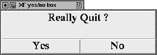

Calling this procedure pops up a yes/no box asking the user if he really wants to quit the application. If he answers yes, the application is terminated. This procedure gets one optional parameter. This parameter is the value that is passed on to the exit call.

Figure: The procedure XFProcFileQuit